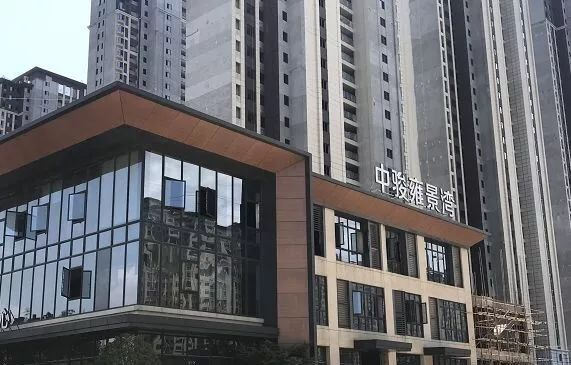
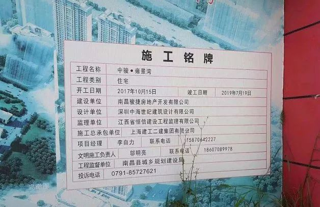
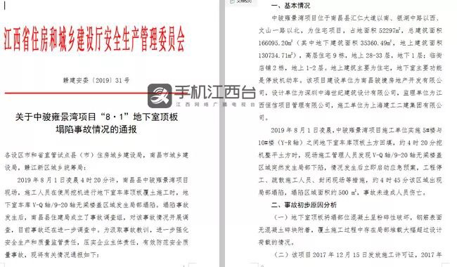
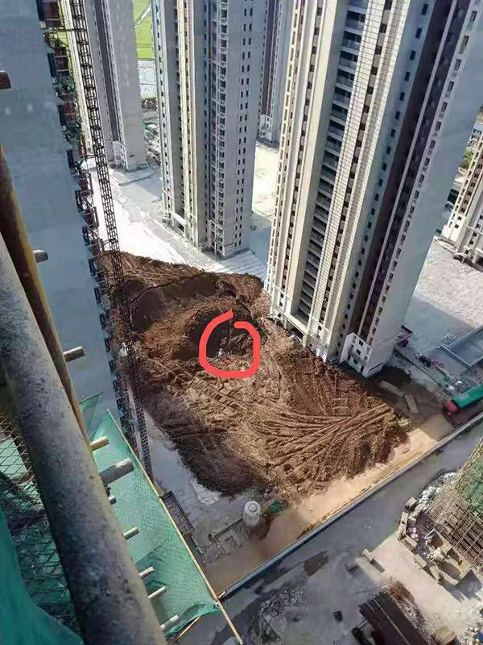
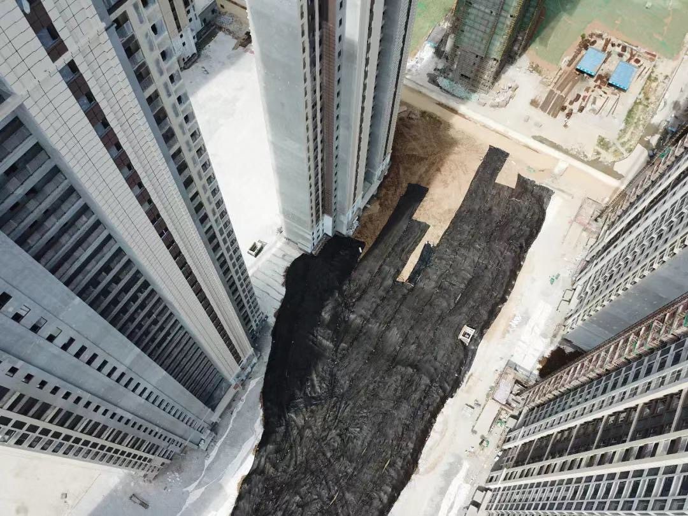
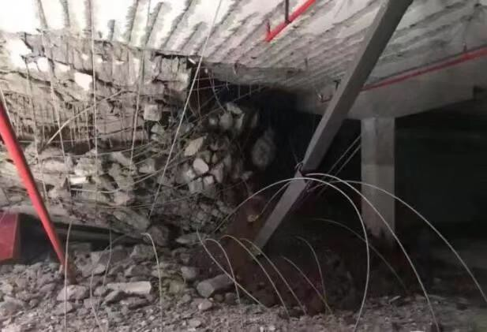
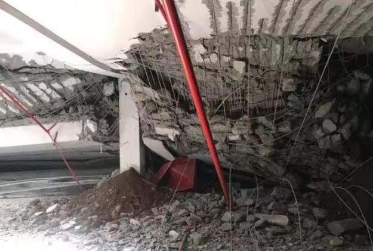

南昌中骏雍景湾地库坍塌事故
2019年8月1日凌晨，南昌中骏雍景湾项目5#楼与10#楼之间地下室车库顶板土方回填施工期间，在4点20左右局部无梁楼盖区域挖机整平土方时突然发生局部下陷，在4点45左右出现局部塌陷，塌陷区域面积估约500平方米。该项目为南昌“限价房”项目，曾获“2018年度江西省建筑安全生产标准化示范工地”称号，并且是“为庆祝中骏成立30周年精工匠造”。


8月8日，江西省住房和城乡建设厅安全生产管理委员会印发事故情况通报，该通报还原了事故经过并分析了事故初步原因。通报还提到，塌陷事故发生后，南昌县住建局成立了事故调查组，对该事故情况开展调查，目前事故还在进一步调查中。

事故通报显示，8月1日凌晨，中骏雍景湾项目施工单位实施5#楼与10#楼(Y-R轴)之间地下室车库顶板土方回填，约4时20分挖机整平土方时，现场施工管理人员发现V-Q轴/9-20轴无梁楼盖区域突然发生局部下陷，情况发生后立即启动应急预案，工程停工、疏散施工人员、封闭现场等措施，约4时45分该区域出现局部塌陷，塌陷区域面积约500平方米，事故未造成人员伤亡。


雍景湾项目局部塌陷现场 业主供图
上述通报中重点提到了事故初步原因分析：
1.地下室顶板坍塌部位混凝土呈粉碎性破坏，钢筋表面无混凝土碎块附着，覆土施工过程中存在局部堆载大幅超过设计荷载的情况；
2.该项目2017年12月15日发放施工许可证，2017年12月5日通过施工图设计文件审查，地下室顶板无梁楼盖未设置暗梁；
3.该项目覆土施工时间是在2018年2月27日《住房城乡建设部办公厅关于加强地下室无梁楼盖工程质量安全管理的通知》(建办质〔2018〕10号)之后，专项施工方案没有遵照该《通知》要求经过设计单位进行荷载确认，施工单位未严格按专项方案施工。


通报要求，该项目参建的建设、设计、施工、监理单位要深刻汲取教训，认真分析事故产生原因，采取切实措施，从严从实抓好整改及现场恢复施工工作，持续加强对中骏雍景湾项目施工现场的安全监测，确保建筑物安全稳定。
这次无梁楼盖坍塌事故通报强调了以下两点：
- 设计未设置暗梁
该项目2017年12月5日通过施工图设计文件审查，当月15日取得施工许可证，然地下室顶板无梁楼盖未设置暗梁。
- 施工单位局部超载
项目覆土施工时间晚于《住房城乡建设部办公厅关于加强地下室无梁楼盖工程质量安全管理的通知》（建办质〔2018〕10号）下发时间（2018年2月27日），施工单位的专项施工方案没有遵照该《通知》要求经过设计单位进行荷载确认，过程中也未严格按专项方案要求施工。
但是近三年来，全国各地发生多起无梁楼盖地库坍塌事故，从北京到沧州，从万科到中骏，不得不说，国人是宽容和遗忘的。沧州嘉禾一方小区地库坍塌事故会不会在全国其它地下室采用无梁楼盖的上重演呢？其它在建类似的地库项目不再发生坍塌事故？没有人会保证。
与无梁楼盖地库设计类似，单柱墩支撑在城市桥梁交通中采用的也较多。不是说这类设计本身不科学，国家是有严格的设计规范，如果按规范执行，几乎不可能出现因为设计原因而造成的坍塌事故的。可设计规范也有存在不科学的可能性，假如设计人员考虑问题不全面，设计成果中结构不合理、计算有误、施工图不完善、施工方法不当，再加上甲方的deadline，设计不当就是引发事故的一个主要原因了。
相关主题：
原文编辑: EHS资讯
原文链接: https://ehsinfo.cn/2019/08/13/南昌中骏雍景湾地库坍塌事故.html
版权声明: 转载请注明出处(必须保留作者署名及链接)